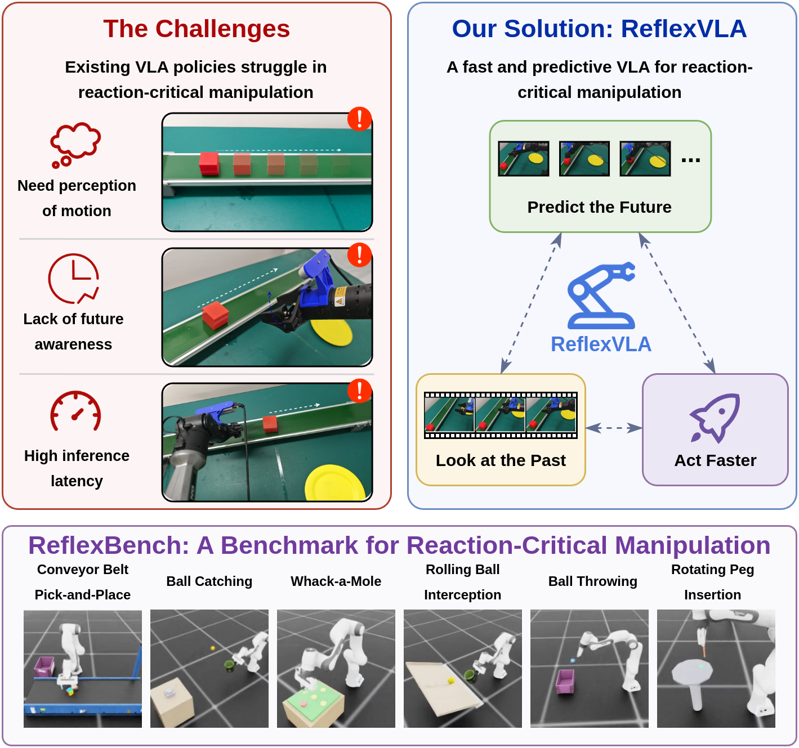
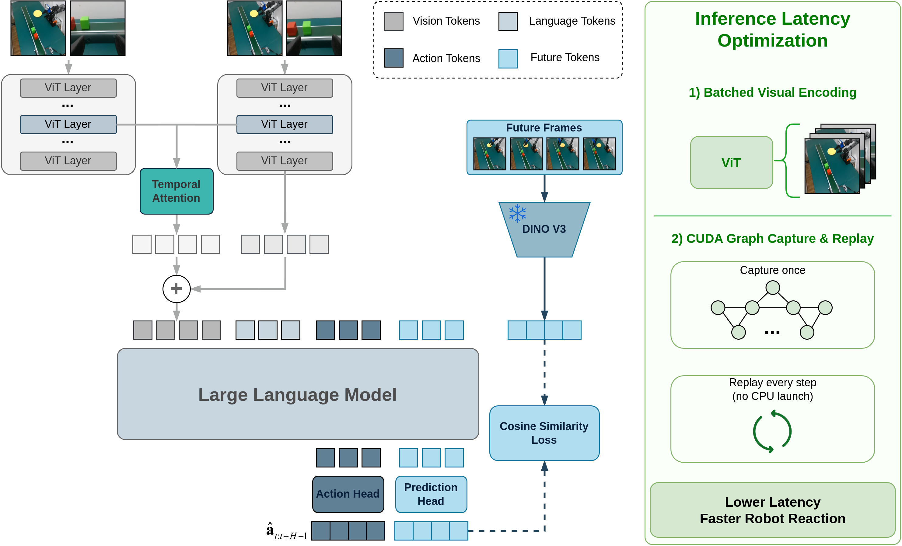

지금까지의 VLA 평가가 정적 조작에 몰려 있어, "굴러오는 공을 잡거나 회전하는 소켓에 페그 꽂기"처럼 반응 지연이 곧 실패인 반응-임계(reaction-critical) 시나리오는 무시돼 있었다. Reflex는 (1) 지연을 설정 가능한 ReflexBench(동적 태스크 6종)와 (2) 미래 잠재 상태 예측 + 다프레임 시간 융합 + 시스템 최적화(batched 비전 인코딩·CUDA Graph)로 무장한 ReflexVLA(1B)를 제안. ReflexBench 평균 50.4% (OpenVLA-OFT 7B 36.0%, π0.5 4B 36.9%, PUMA 4B 50.2%), 지연은 81.5→65.0 ms로 48% 감축. LIBERO 97.2%로 정적 벤치 성능도 유지.
기존 VLA 벤치마크(LIBERO, SimplerEnv 등)는 모두 물체·환경이 정지한 상태에서 조작한다. 실세계는 공이 굴러오거나, 컨베이어 벨트가 움직이거나, 페그 구멍이 돌아가는 상황이 흔하다. 이런 반응-임계 시나리오에서는 (a) 다음 몇 프레임을 예측하는 능력과 (b) 추론 지연이 성공을 좌우한다. 저자들은 두 방향 모두를 결합한 최초의 벤치와 모델을 제시.
액션 청크 내 각 미래 시점 t+k에 대해 예측 토큰을 하나씩 두고, 동결된 DINOv3(라벨 없이 학습된 강력한 비전 인코더)로 얻은 미래 프레임 특징과 마스킹된 cosine similarity 손실로 정렬한다. 픽셀 예측이 아니라 의미 있는 특징 공간에서 예측하므로, 배경 텍스처 등 무관 디테일에 계산을 낭비하지 않고 "다음 몇 프레임이 어떻게 될지"의 요지만 학습.
T개 과거 프레임을 각각 토큰으로 붙이면 sequence 길이가 2차적으로 커진다. 대신 비전 백본 중간 층(motion cue가 더 잘 살아 있는 층)에서 각 프레임의 패치 특징을 causal temporal attention으로 융합해 현재 프레임 표현에 주입. 결과적으로 언어 모델 입력 길이는 단일 프레임과 동일하게 유지되면서 시간 정보를 얻음.
두 최적화만으로 125.1 → 65.0 ms (48% 감소, 표 III 참고).
| 모델 | Params | Conv.Belt | Ball Catch | Whack-a-M | Roll.Ball | Ball Throw | Rot.Peg | Avg |
|---|---|---|---|---|---|---|---|---|
| OpenVLA-OFT | 7B | 58.0 | 5.3 | 100.0 | 41.4 | 10.0 | 1.3 | 36.0 |
| π0.5 | 4B | 39.1 | 6.0 | 98.9 | 36.8 | 34.0 | 6.7 | 36.9 |
| PUMA | 4B | 67.4 | 4.0 | 100.0 | 85.1 | 33.8 | 11.1 | 50.2 |
| DynamicVLA | 0.5B | 30.6 | 4.4 | 90.2 | 45.8 | 36.2 | 16.7 | 37.3 |
| SmolVLA | 0.5B | 19.3 | 2.9 | 100.0 | 70.2 | 27.1 | 10.0 | 38.3 |
| VLA-Adapter (baseline) | 1B | 36.8 | 6.0 | 68.4 | 23.1 | 29.1 | 18.4 | 30.3 |
| ReflexVLA | 1B | 73.8 | 7.3 | 100.0 | 77.1 | 31.7 | 12.4 | 50.4 |
1B로 4B PUMA와 평균 동률(50.4 vs 50.2). Conveyor Belt 73.8%로 최고. Ball Catching은 전 모델이 낮은 편(6~7%대) — 실제 순간속도 잡기는 여전히 미해결.
Spatial·Object·Goal·Long 4개 suite 평균 97.2%. 반응성에 특화되면서도 정적 벤치 경쟁력 유지.
| 구성 | 변형 | 성공률 | 지연 (ms) |
|---|---|---|---|
| Baseline (VLA-Adapter) | — | 36.8% | 81.5 |
| + Future Prediction | Frozen DINOv3 | 62.8% (+26.0) | 82.5 |
| + Temporal Fusion | 중간 층 MHA | 71.7% (+34.9) | 125.1 |
| + Latency Optim. | Batch Enc. + CUDA Graph | 73.8% (+37.0) | 65.0 |
핵심 관찰: (1) 동결된 DINOv3 target이 안정적 지도 신호를 제공. (2) 중간 층 temporal fusion이 최종 층보다 motion cue 보존에 유리. (3) 두 시스템 최적화만으로 지연이 오히려 baseline보다 낮아짐(81.5 → 65.0 ms).


아직 추가 질문이 없습니다. 이 논문에 대해 더 궁금한 점을 물어보시면 답변을 여기에 정리해 추가합니다.